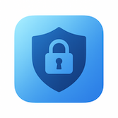

Get help with your secure password manager
Passwords Max uses military-grade AES-256 encryption to protect your passwords. All data is stored in iOS Keychain, which is Apple's secure encrypted storage system. Your vault is protected by Face ID or Touch ID, and the app includes auto-lock functionality. We never collect, transmit, or store your data on any server.
Your passwords are encrypted and protected by biometric authentication. Without your Face ID or Touch ID, no one can access your vault. However, we strongly recommend creating encrypted backups regularly through the app's export feature. Store these backups in a secure location.
Passwords Max does not include cloud sync to maintain maximum privacy and security. Your data stays only on your device. However, you can manually transfer passwords between devices using the encrypted backup and restore feature.
Passwords Max includes one-tap import from Apple Passwords (iCloud Keychain). Simply go to Settings → Import → Apple Passwords and follow the prompts. The app will guide you through the process.
Yes! Passwords Max is completely offline and doesn't require an internet connection. All features work without network access, ensuring your passwords are never transmitted anywhere.
2FA (Two-Factor Authentication) adds an extra layer of security to your accounts. Passwords Max includes a built-in TOTP authenticator that generates time-based codes. To add 2FA to a password entry, tap the entry, select "Add 2FA", and either scan the QR code or enter the secret key manually.
Passwords Max uses your device's biometric authentication. If you're unable to authenticate with Face ID or Touch ID, you'll need to use your device passcode. This is handled by iOS, not the app. If you've lost access to your device entirely, you can restore from an encrypted backup on a new device.
Only if you've created an encrypted backup before deleting the app. When you uninstall Passwords Max, all data stored in the app is permanently deleted. Always create and securely store encrypted backups before uninstalling.
Store unlimited passwords with username, password, URL, and notes. Each entry is encrypted individually.
Built-in TOTP generator creates time-based codes for two-factor authentication.
Organize passwords with customizable categories and icons. Create categories for work, personal, banking, etc.
Mark frequently used passwords as favorites for quick access from the main screen.
Quickly find passwords by searching titles, usernames, URLs, or notes.
Visual indicator shows password strength to help you maintain secure credentials.
title, username, password, url, notes⚠️ Important: Delete the CSV file from your device after importing to maintain security.
💡 Tip: Create regular backups, especially before major iOS updates or device changes.
Passwords Max is regularly updated with new features, improvements, and security enhancements. Updates are free and delivered through the App Store. Enable automatic updates to ensure you always have the latest version.
Passwords Max is built with privacy as the core principle. We do not collect, transmit, or store any of your data. All passwords remain encrypted on your device. For complete details, please review our Privacy Policy.
Need additional help? Have a feature request? Found a bug? We're here to help!
Response Time: We typically respond within 24-48 hours
Note: Please do not send us your passwords or backup files. We cannot access your encrypted data, and sending passwords via email is insecure.